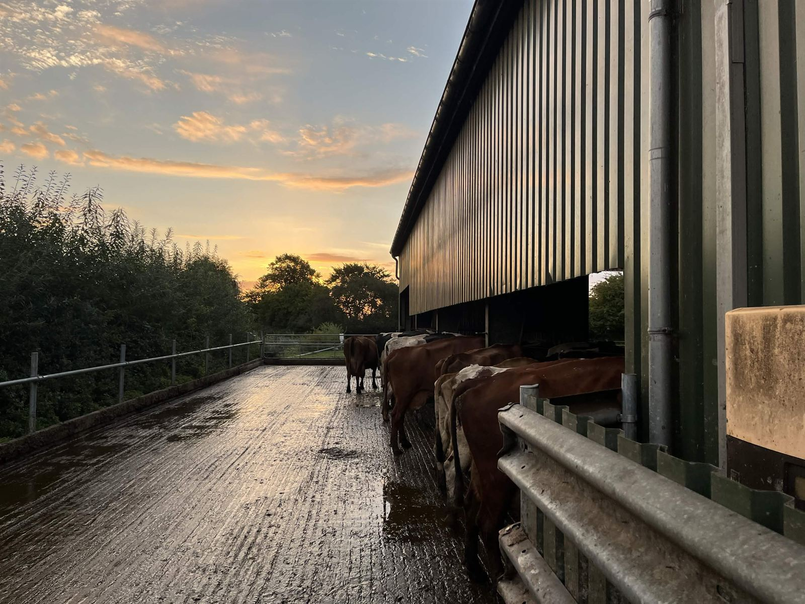
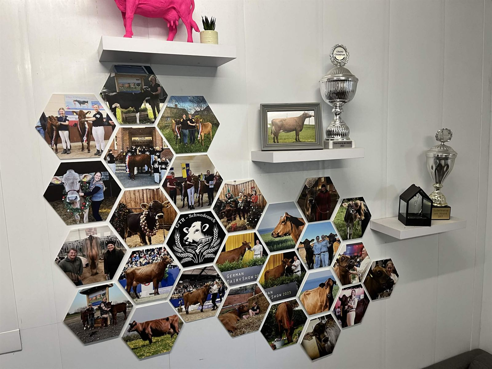

Milchviehhaltung
Rund 100 Kühe, fünf Rassen, Weidegang im Sommer und eigenes Futter vom Acker. Unsere Milch geht an die Gläserne Molkerei.
Zur Milchviehhaltung
Wir sind ein landwirtschaftlicher Familienbetrieb in Schwedeneck. Wir halten Milchkühe, bewirtschaften unsere Flächen nach Bioland-Richtlinien und züchten unter dem Namen GTR Angler Rotvieh und Holstein-Rinder, mit denen wir auf Schauen erfolgreich sind.
Unseren Hof in der Dorfstraße in Schwedeneck gibt es seit 1896. Seit 1989 bewirtschaften wir ihn nach den Richtlinien von Bioland. Die Entscheidung fiel damals, weil die Richtlinien gut zur Bewirtschaftung, zur Betriebsführung und zur Vermarktung der Milch passten.
Heute bewirtschaften wir rund 200 Hektar, halten etwa 100 Milchkühe und züchten unter dem Präfix GTR Rinder, mit denen wir regelmäßig auf Schauen antreten. Auf dem Hof arbeiten neben uns regelmäßig etwa zweieinhalb weitere Personen, dazu kommen je nach Saison ein Minijobber und Praktikanten.

landwirtschaftliche Fläche, davon 150 ha Ackerland und 50 ha Dauergrünland
Milchkühe im Bestand, dazu rund 20 Kälber pro Jahrgang
Milch je Kuh und Jahr im Durchschnitt
Leistung unserer Photovoltaikanlage auf dem Hof
Was auf dem Acker wächst, füttert unsere Tiere. Was die Tiere liefern, düngt wieder die Flächen. Und aus der Milchviehherde heraus ist über die Jahre eine Rinderzucht entstanden, auf die wir besonders stolz sind.
Rund 100 Kühe, fünf Rassen, Weidegang im Sommer und eigenes Futter vom Acker. Unsere Milch geht an die Gläserne Molkerei.
Zur MilchviehhaltungAus der Milchviehherde ist unsere eigene Zucht entstanden. Unser Schwerpunkt liegt auf Angler Rotvieh, mit dem wir auf Schauen erfolgreich sind.
Zur RinderzuchtSeit 1989 wirtschaften wir nach Bioland-Richtlinien. Vielfältige Fruchtfolge, mechanischer Pflanzenschutz und Flächen für die Natur.
Zum ökologischen Landbau
2023 wurde GTR Zelda in Süderbrarup zunächst mit 1a ausgezeichnet, dann Siegerkuh Jung und am Ende Grand Champion. 2026 stand in Neumünster ihre Tochter GTR Darunia auf dem Siegertreppchen, als Siegerin der Jungrinder.
Auch die Mutter von Zelda, RZS Tara, wurde 2026 in Neumünster ausgezeichnet, als Siegerin der älteren Kühe, mit bereits acht Kälbern. Drei Generationen, die zeigen, wie lange unsere Zuchtarbeit schon läuft.
Zum Hof gehören auch unsere Kälber, die erst in Kälberiglus und später in Gruppen aufwachsen, sowie Schweine, Gänse, Puten, Hühner und Katzen, die den Hofalltag mitprägen.
Ob du dich für ein Praktikum interessierst, als Landwirt oder Landwirtin bei uns vorbeischauen willst oder einfach wissen möchtest, wo deine Biolandmilch herkommt: Melde dich bei uns.
Kontakt aufnehmen